跨街景重复的局部要素组合
先在每个方向的28×28 patch 激活中提取形状自适应的区域，再把同一点位四个方向放在一起，寻找不同要素及其相对关系的跨城重复实例。
01 · 四方向输入
0°、90°、180°、270°同属一个全景，真实朝向和完整图像在实例中保留。
02 · 局部 SAE 要素
复用当前 ViT-L W4096/K32 逐 patch 激活，在方向图中产生非矩形区域遮罩。VLM 父类只用于探索性的要素归组。
03 · 重复关系检索
每个候选至少包含两个不同父类，检索同方向或跨方向的相对布局；数量由训练样本支持决定，不预设32或96种景观。
04 · 留出样本核查
开发集比较训练候选与同城要素及布局置换对照；测试集封存。语义仍需人工复核。
当前实验如何找组合？
以完整四方向全景为统计单位；每张方向图独立形成要素区域，再用方位、上下左右和分离的 mask 建立关系。相同父类的两块区域不构成多要素景观组合。探索性样本先看重复与置换对照，不将一个模型模板直接当作景观类别。
局部要素组合 · 探索性结果
从 29 城抽样 1,392 个训练全景和 464 个开发全景，共 7,424 张方向图像。每张图的 SAE patch 激活被归入暂定要素父类，再形成非矩形区域 mask。每个候选关系包含两个不同父类，可位于同方向或同一全景的不同方向；最终组合数量没有预设。
训练样本提出 298 个重复关系候选；原始图库选出 12 个方向关系，本页把同一要素对与上下关系的 90°／180°／270°变体仅在展示层合并，呈现 5 个不同组合布局。统计检验仍针对原始 298 个候选，未合并 p 或 q 值。两个零假设均通过 BH-FDR q<0.05 的候选有 173 个；这是样本内探索性检验，不代表 173 种独立景观。每张图为同一点位的 0°、90°、180°、270° 四方向；红色和蓝色分别遮罩两种要素。
遮罩依据 SAE 激活和事后 VLM 父类推断，不是独立分割标注；建筑墙面和窗户归为同一父类，不能靠它们自身形成多要素组合。实例还需人工审阅对象完整性、关系稳定性以及跨城泛化。测试集保持封存，80% 语义覆盖目标尚未验证。
候选 01 · 道路及车行路面 + 乔木及其部件 · 跨方向，朝向相差90°，后者在画面中更高 · 开发集 374 全景 / 29 城
原始关系代码：cross_90_U；两种要素分别以红、蓝遮罩。
训练样本：1080 全景、1014 空间块、29 城；开发样本：374 全景、345 空间块、29 城。同城方向内要素置换期望 118.8，布局置换期望 131.6；BH q 值分别 0.010 / 0.009。
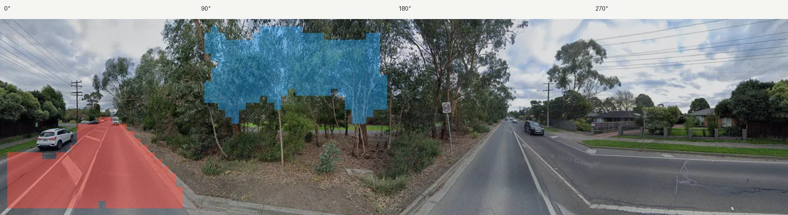
panoid: toLo35Tiv0hhncPjzCPIXA
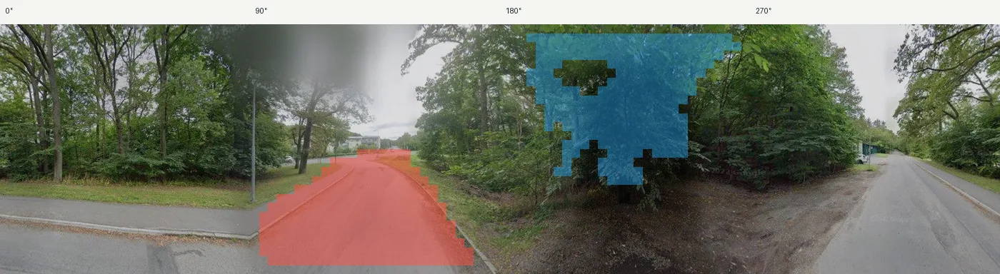
panoid: wak2VjeD27Hz82YUS9gN3w
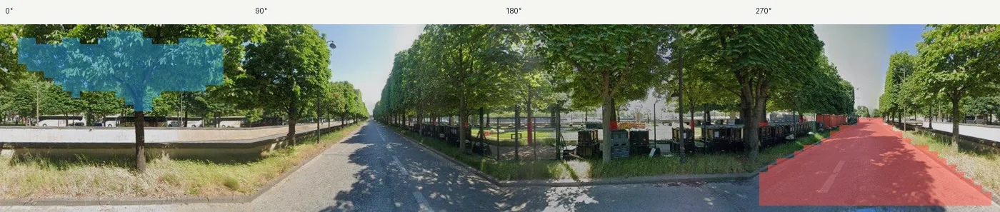
panoid: 7sJnexEPFQ1Auk1siTK3wA
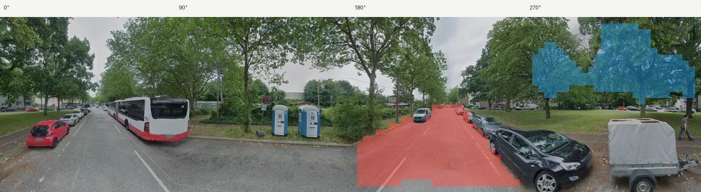
panoid: xgoczVJN6-ytqxt6KIUwLw
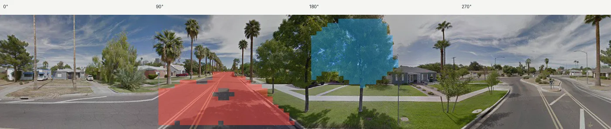
panoid: aB6mMtZx-ats6x5e2mXKeQ
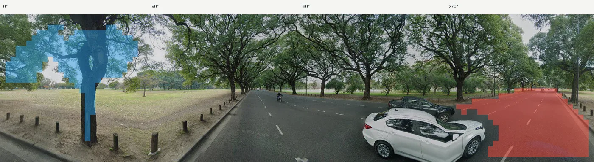
panoid: SLo9DxWL_2u4XgUT7fcC_g
候选 02 · 建筑及附属部件 + 道路及车行路面 · 跨方向，朝向相差270°，后者在画面中更低 · 开发集 353 全景 / 29 城
原始关系代码：cross_270_D；两种要素分别以红、蓝遮罩。
训练样本：1074 全景、980 空间块、29 城；开发样本：353 全景、319 空间块、29 城。同城方向内要素置换期望 110.4，布局置换期望 122.5；BH q 值分别 0.010 / 0.009。
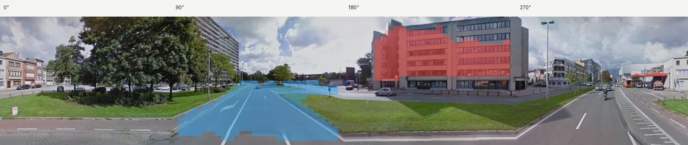
panoid: 5YXvlsM9LFaI6YOBIRe7_w
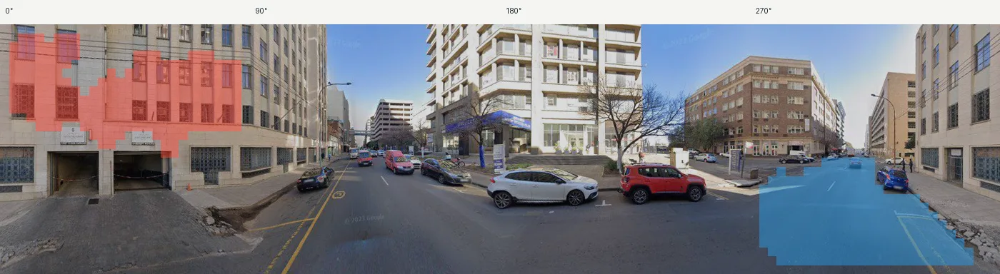
panoid: UlHqD4SKdEz2fVmsIemxhw
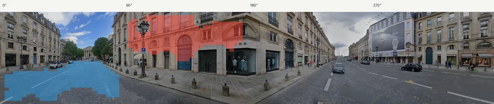
panoid: gOGhNvzE5j5yjkHj_uESkQ
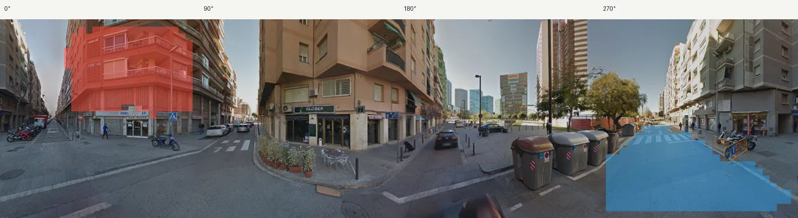
panoid: g8-VU423pEr4jogSMazZtw
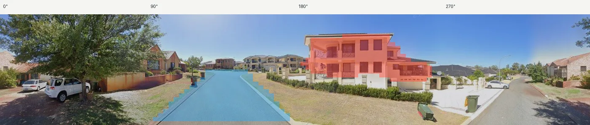
panoid: 4G-SdDlRP1fRw_lLq9UXbA
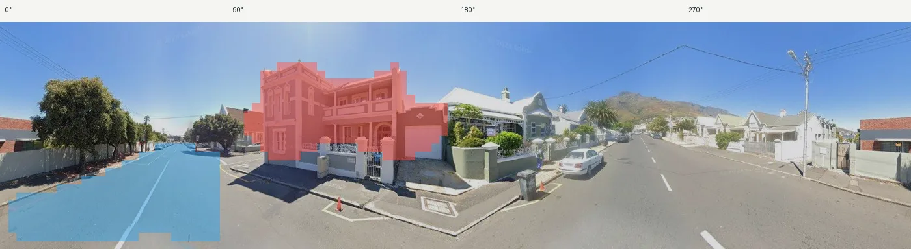
panoid: xbxhhfJEOR7lmEk-vFePNg
候选 03 · 建筑及附属部件 + 乔木及其部件 · 跨方向，朝向相差180°，画面高度相近 · 开发集 269 全景 / 29 城
原始关系代码：cross_180_M；两种要素分别以红、蓝遮罩。
训练样本：803 全景、757 空间块、29 城；开发样本：269 全景、251 空间块、29 城。同城方向内要素置换期望 167.6，布局置换期望 166.0；BH q 值分别 0.010 / 0.009。
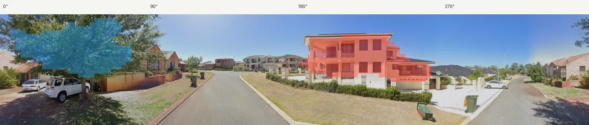
panoid: 4G-SdDlRP1fRw_lLq9UXbA
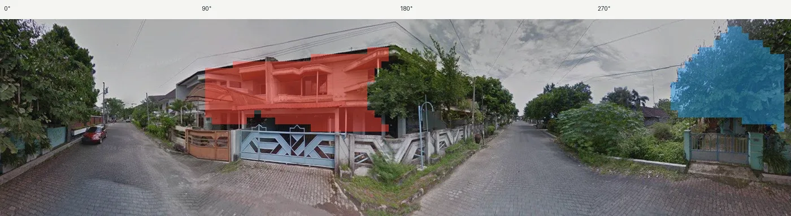
panoid: nUsIzPs5uRMXI_3pNUhhdw
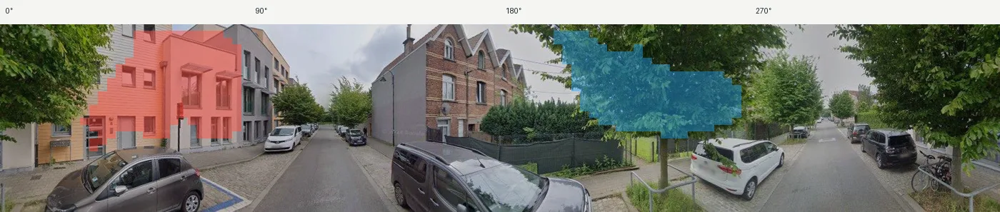
panoid: wX6vL4gKz3stQKeE724XkA
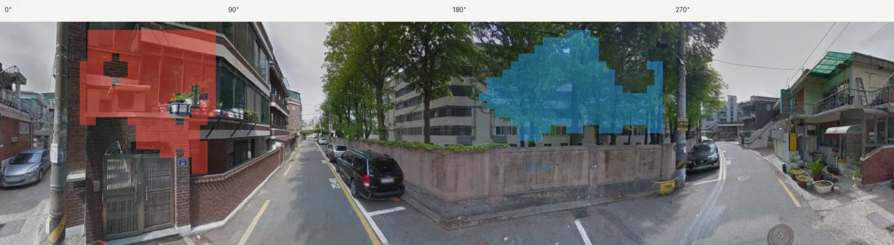
panoid: Bw1NdbWbpwQRdDYhz-sQAQ
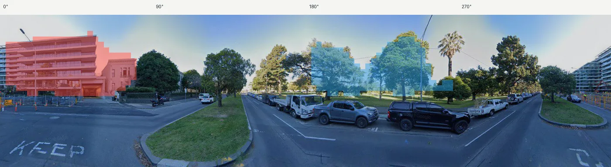
panoid: UKTitL1JBmBS54iCDykPBg
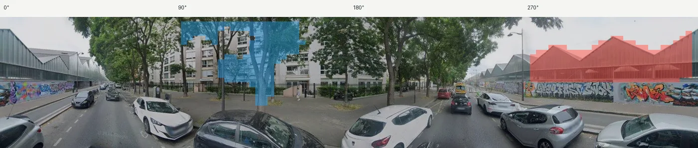
panoid: GmH8r-cXnHlF9vnEZA0BvA
候选 04 · 道路及车行路面 + 乔木及其部件 · 同方向，后者位于前者上方 · 开发集 254 全景 / 29 城
原始关系代码：same_UM；两种要素分别以红、蓝遮罩。
训练样本：727 全景、699 空间块、29 城；开发样本：254 全景、245 空间块、29 城。同城方向内要素置换期望 77.5，布局置换期望 86.1；BH q 值分别 0.010 / 0.009。
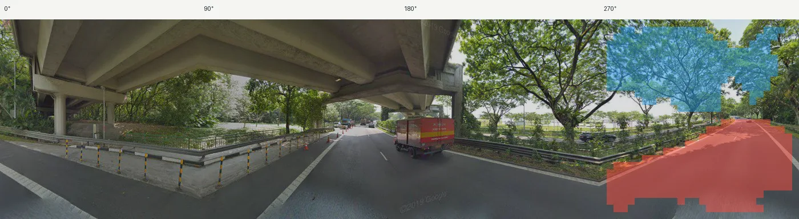
panoid: gTYfG6ibFcioTAPn0p8pgw
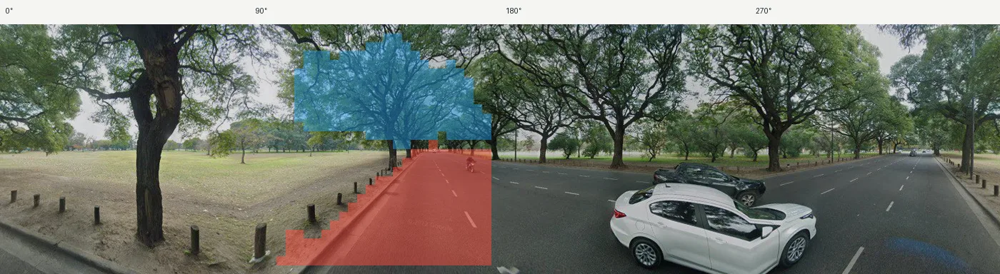
panoid: SLo9DxWL_2u4XgUT7fcC_g
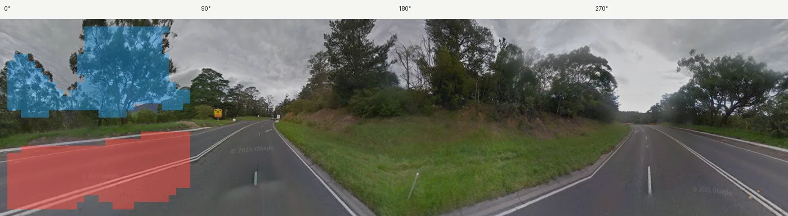
panoid: i3mEbodXrXz6R6vxVN5HUA
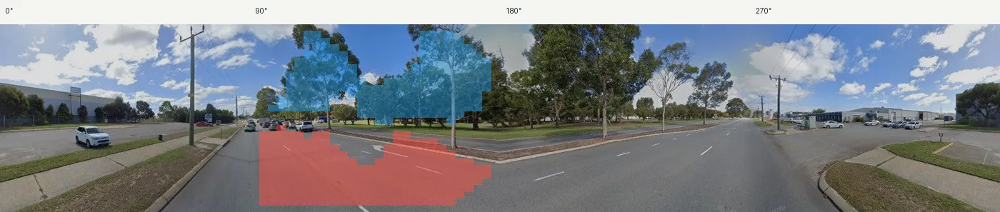
panoid: Y-4NrRlBdbsgjZ17-wSZiQ
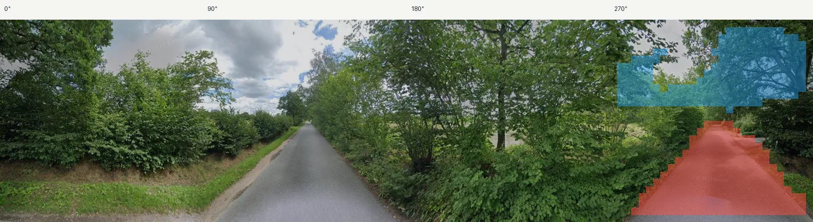
panoid: u6vbn5LqUO2EYGsYKCbcFg
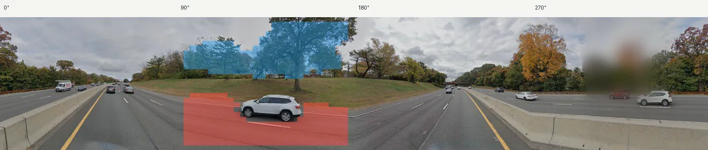
panoid: Cb6ggCRmSEI2Co6yQ090xw
候选 05 · 草灌及低矮植被 + 道路及车行路面 · 跨方向，朝向相差270°，画面高度相近 · 开发集 251 全景 / 29 城
原始关系代码：cross_270_M；两种要素分别以红、蓝遮罩。
训练样本：756 全景、740 空间块、29 城；开发样本：251 全景、236 空间块、29 城。同城方向内要素置换期望 173.5，布局置换期望 182.2；BH q 值分别 0.010 / 0.009。
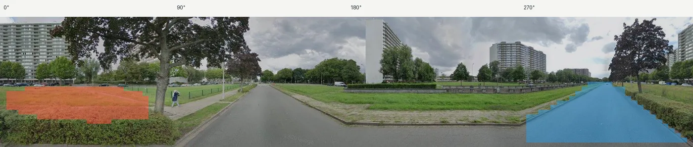
panoid: wSXGrwbNdR8rpU_jk9EhDA
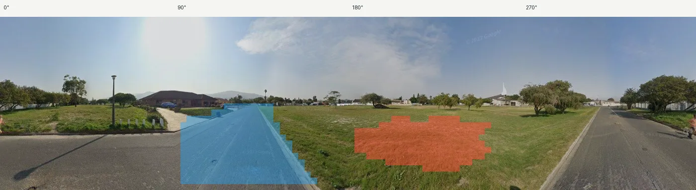
panoid: jaBf3dc_dBNS72OwJkOpbg
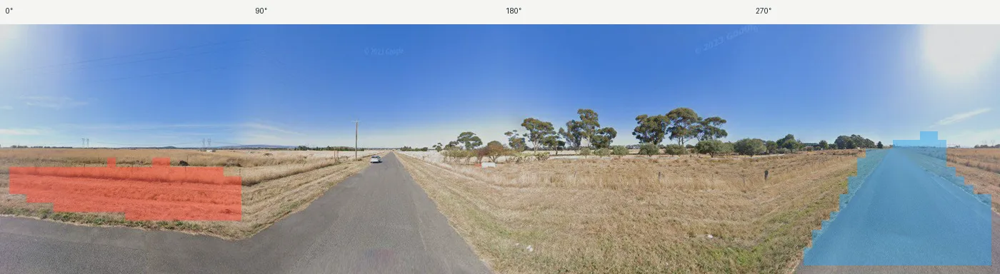
panoid: 4O-7pJ7LY_0f-hmiZXCS5A
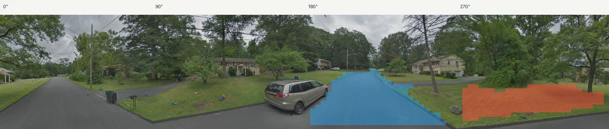
panoid: tdbkkXLT0OZXSHtBnn6UQw
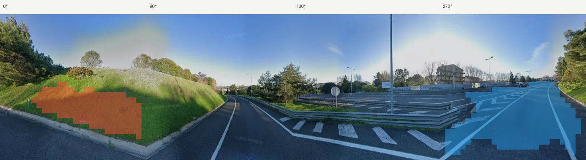
panoid: LHvfTnvJPSYgNYuW_VQBpA
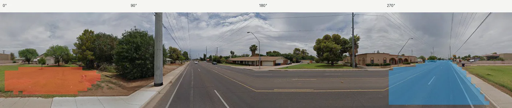
panoid: Ojk1_ooITbjxpKFezBcLEw
用于解释的景观要素基础
窗户、门和建筑墙面归入建筑，树冠和树干归入乔木，车窗和车轮归入车辆。细标签及原始维度仍保留，用于解释当前局部要素组合；父类只是暂定的检索辅助，不是经过独立验证的景观类别。
逐维候选与原图证据
优先列出426个遮罩/未遮罩解释父类不一致的维度。冲突标记仅表示需要检查，不能单独判断哪种解释正确。模型自述“高信心”不是准确率。
下载完整要素表 CSV · 下载复核清单 CSV · 数据与来源 JSON
载入候选表…
范围与当前结论
没有重新提取DINO特征或训练SAE，没有新开测试集图像或激活。现有VLM解释资料曾使用包含新原型层训练、开发和测试图像的语料，因此这些语义先验不独立于测试；后续结果先作为探索性证据。
1,048维背景/材料，503维待核查，522维证据不足，462维仍无正激活证据。待核查项没有被删除，也没有被算作已验证的语义。